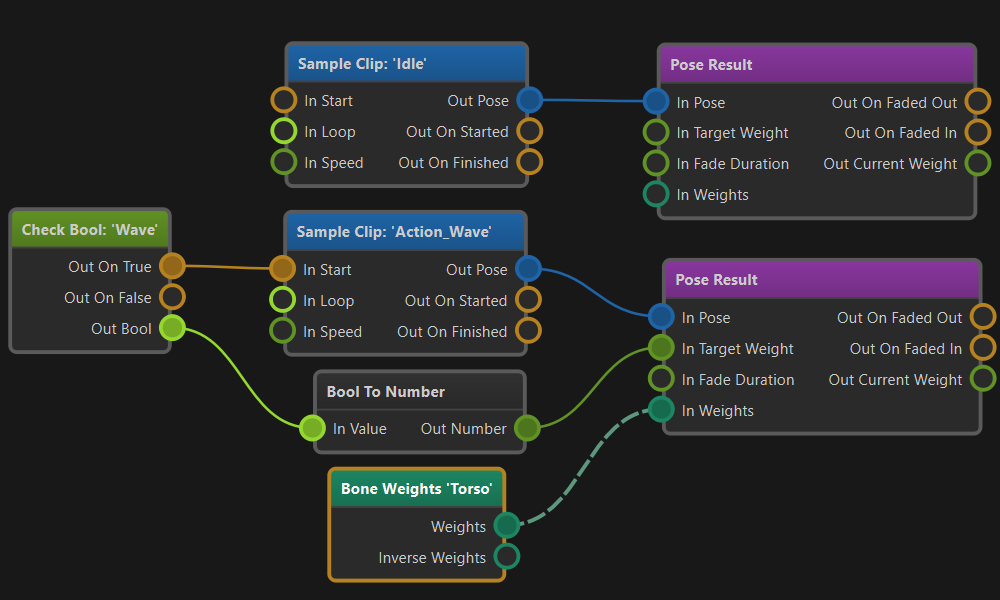

Animation Graphs
Animating characters is a complex task. Even simple creatures typically already need tens of different animation clips for locomotion and basic actions. However, having the animation clips is not enough, they also need to be played on the animated mesh in such a way that animations blend over nicely and play perfectly in sequence. Additionally you may need to apply an animation only to a certain part of the body. Animations should fade in and out smoothly as they are activated and deactivated, and certain clips need to be synchronized to achieve the desired effect.
An animation graph is used to configure how each animation clip of a character should behave when it is actively played on the mesh. Animation graphs are the basis for complex animation playback. They also provide some very basic functionality for logic and math, such that one can build simple state machines. For more complex decisions which animations should play when, use custom code.
Creating and Using Animation Graphs
Animation graphs are configured through the animation graph asset type. To apply the output pose of an animation graph to an animated mesh, add an animation controller component to the same game object. The controller will send the output pose to the mesh every frame, but only while the scene is simulated.
To control what an animation graph will output, you typically also need a blackboard. The blackboard is used to store state. Scripts or other custom code decide which animations should be played and write that state to the blackboard. The animation graph in turn reads state from the blackboard and then activates the desired animation clip playback. The graph can also write back state to the blackboard, for example to communicate back that an animation clip has finished playing.
Animation Graph Concept
The following image shows a basic animation graph:

The flow is from left to right.
The graph sets up two animations. One idle animation and one wave animation.
The two top nodes configure the idle animation. The blue node is a pose generation node, in this case a node that simply samples an animation clip. The node is set to loop and it has no additional input pin connections, which is why it will automatically start and play indefinitely. Its output is fed directly into a pose result node which means that this pose will always be active.
The other five nodes make up a second animation. In this case a wave animation that can be enabled at will. At its core it works the same as the idle animation. A sample clip node samples the wave animation clip and forwards it to a pose result node. When multiple pose results are available at the same time, they get mixed together.
However, the wave animation should not play all the time, so a check bool node is used to query a blackboard value. Some custom code must decide whether the wave animation should be played and write this information to the blackboard. Since the Start pin of the sample clip node is connected, the node will only start playing the animation when the start pin gets triggered.
Additionally, since the wave animation should not always be active, we should set the Target Weight of the pose result to 0 to disable the pose output. Here we simply convert the Bool result of the check bool node to a number (0 or 1) and forward it as a weight to the pose result. Thus, as long as the wave animation should play, the pose result will be used. But when the wave animation should stop (which may be at any time even in the middle of the animation), the pose result target weight will be set to zero, and the pose result node will quickly fade out the animation.
Finally, we want the wave animation to only play on the upper body of the creature, so we generate a bone weights mask and forward that to the pose result as well. This makes sure that the wave animation only affects bones from the torso and above.
Summary
The animation graph uses a graph based workflow to let you visually configure how animation clips are combined. Nodes have inputs to control their behavior, and they output data or state that can (or must) be forwarded to the next step in the pipeline, until an animation pose ultimately reaches the output.
The system is intelligent enough to optimize away operations that don't affect the output.
You typically control which animations are played through a blackboard. For quick prototyping you can also use the input nodes to get certain input data directly into the graph.
Simple animation state machines can be built directly in the animation controller graph using the logic and math nodes as well as the blackboard nodes. For more complex logic you should use custom code.